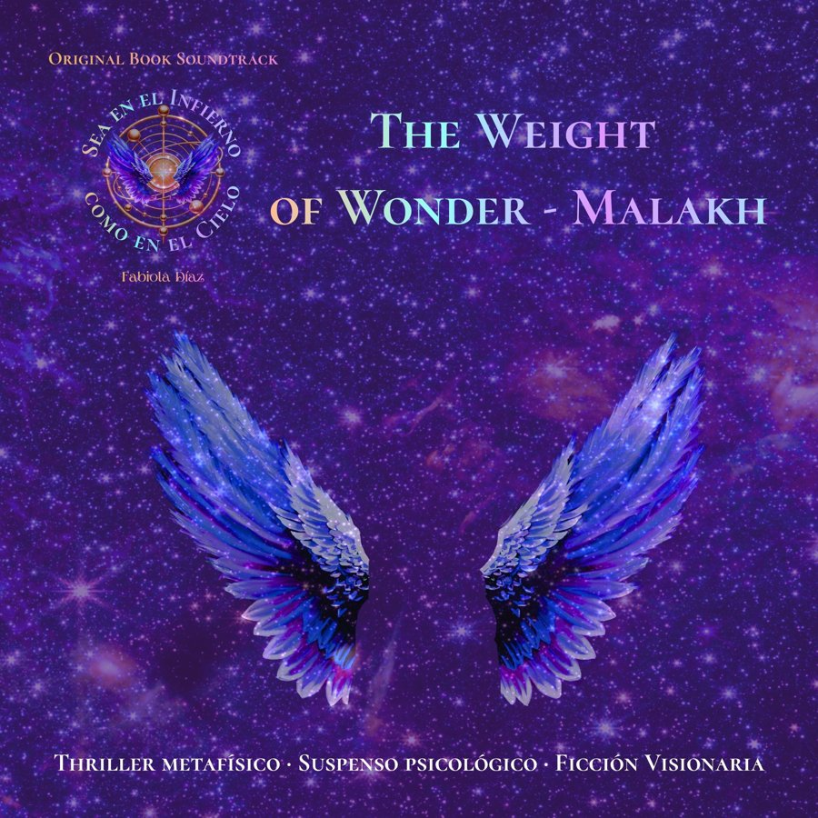

Original Book Soundtrack
Sea en el Infierno como en el Cielo cuenta también con un soundtrack original, una experiencia sonora paralela a la obra literaria, concebida para acompañar la lectura. No es música de fondo. Algunas piezas son instrumentales que narran acontecimientos o estados emocionales de los personajes. En otras, se incorpora letra tomada directamente del libro, y remiten a capítulos específicos.
La música describe personalidades de los personajes o momentos determinados de la trama. Las letras vienen del propio universo del libro. Algunas tienen letra hasta en tres idiomas, porque esta es una historia de vocación universal.
Fabiola Díaz estuvo a cargo de la dirección creativa y narrativa de la experiencia sonora. La producción musical está hecha con herramientas de inteligencia artificial.
Este es el punto de entrada al soundtrack oficial de Sea en el Infierno como en el Cielo. Paulatinamente se irán integrando canciones relacionadas al libro. Escucha aquí las piezas ya disponibles.
Sea en el Infierno como en el Cielo

The Weight of Wonder — Malakh